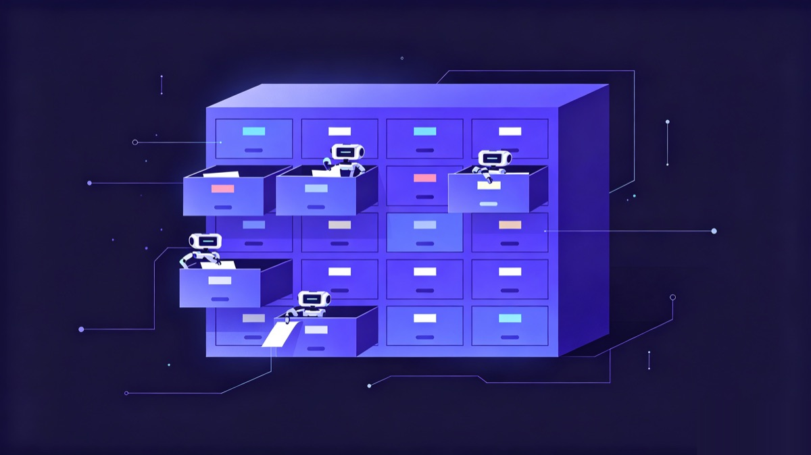

It all started with a gripe.
I'd spent time on Windows getting a project's context just right with Claude Code. Then I turned to my Mac, and Codex over there knew nothing. I had to explain the whole thing again from scratch. Switch to the little Linux box at home, and it was another blank slate. I had four or five machines and agents from several different vendors, and every single one was an amnesiac. I was the guy stuck reciting the same medical history over and over.
The most ridiculous moment: on machine A, I'd had an agent write down "the deploy script for this project has a nasty gotcha." The next day, the agent on machine B went and stepped on that exact same rake, in earnest.
And that's before you factor in that the tools themselves keep changing. These past couple of years there's been a new "current best" model showing up almost every month. I went from Cursor to Claude Code, then tried Codex, then Gemini. Whenever something shipped a new version, I wanted to play with it. And every switch meant re-teaching that project's background and rules all over again. New tool, new model, new computer: my agent was forever stuck on "nice to meet you."
I'd even thought about worse cases. What if one day some tool became unusable because of policy or a regional restriction? What if I had to move everything over to a domestic Chinese model? I didn't want the context I'd worked so hard to build up to be chained to any one tool I didn't control. Switching tools is fine. Teaching it all again from zero is not.
I tried stuffing the memory into the various built-in schemes that come with the tools, and I tried hanging a dedicated memory service off to the side. The problem was they were either locked to one vendor or one machine, or they meant standing up a service, wiring in a database, managing accounts. I just wanted a few agents to share some notes. Why should I have to run a whole backend for that?
Later I sat staring at the git status on my screen for a while, and it suddenly clicked. The thing I use every day, the most rock-solid, cross-platform, built-from-birth-to-handle-multi-person-conflict sync tool, was right there in my hand.
Memory is, at its core, a pile of text. And the best home for text is git.

Version one: write the memory as markdown, throw it in a single repo
The idea was almost embarrassingly simple. Open a git repo, fill it with plain markdown, and let that repo be the single source of truth. Every agent pulls before it works, and commits and pushes when it's done. No server, no API, no hosting. Just git.
The moment it worked was genuinely a thrill. On Windows I had an agent write down a decision, switched to the Mac, ran a pull, and Codex read it instantly. Two agents from two different vendors, standing on the same context for the first time.
The thrill didn't last long. A few very practical problems came crawling out.
Problem 1: with 16 agents all writing, won't they fight?
This was my biggest worry. Right now I've got Windows, macOS, several Linux machines, and even an Android phone, more than 16 agent instances all told. If they're all writing into one repo at the same time, surely git conflicts would be flying everywhere.
The answer, it turns out, is physical isolation. Every machine, every agent, owns only its own directory, and writes only to its own directory.
The path looks like this: agents/<host>/<agent-id>/, for example agents/desktop-rkv5ls4/claude-i5bc/. Claude on Windows writes to its cell, Codex on the Mac writes to its cell, and nobody touches anybody else's private memory. A conflict requires two people editing the same line, and this layout means they aren't even writing in the same file to begin with.
And if there really is a collision? The protocol hardcodes a rule: in your own directory, conflicts take local; in someone else's directory, conflicts take remote; for the upstream-managed common parts, the rules and the shared memory, take remote. Whoever owns it decides. The machine doesn't have to guess.
Problem 2: syncing across machines, won't things get lost or collide?
Splitting up the directories isn't enough on its own. When two machines push one right after the other, that little sliver of time in between can still cause trouble.
What handles this is atomic sync on every write. Each time Claude Code does a Write/Edit in its own memory directory, a hook runs pull --rebase first, then commits and pushes right after, retrying automatically on failure. I'm not typing any of this by hand; it just runs once the hooks are installed.
The effect is that the real race window gets squeezed down to the tiny instant of a single write. I've been using it this long, and losing memory across machines or having two machines collide just hasn't happened again. Installing it is a single line:
bash scripts/install/claude.shCodex and Gemini have install scripts too, but they don't get per-write hooks (today only Claude Code and Kimi Code do). Their installer writes the protocol into the tool's startup file, and the agent commits and pushes its own directory at the end of the session. Either way, once it's set up you barely notice the pull / commit / push happening.
Problem 3: the protocol will get upgraded, will my own stuff get wiped out?
This was a hidden risk I only realized later. The protocol itself iterates. How directories are split, how the rules are written, upstream nestwork updates all of it. If I'd forked it, every sync from upstream would mean a manual merge, and one wrong move could wipe out the strategy I'd built up over months, every agent's private memory, the team's shared memory, all of it gone.
What nestwork does is inherit via GitHub's Use this template, not fork. The protocol skeleton is inherited, but your private repo is an independent branch from day one. Upstream updates the protocol through its own update script, which touches the protocol layer and never touches your agents/, shared/, queen/ (where your rules and strategy live), or projects/. My own stuff sits safely in its own repo.
"Clone and you're in" means the same thing. A new machine shows up, you clone it down, run the install script, and the agents on that machine automatically join the same brain.
An unexpectedly handy thing: agents can leave each other notes
I should say a word about the layering. The protocol sets a very rigid priority chain: rules > strategy > shared memory > each agent's private memory > projects > methodology. When there's a conflict, you don't blend the two together; you pick the higher-priority one and drop the other. It's because of this chain that 16 agents don't all run off in their own directions. They're reading the same "constitution."
What genuinely delighted me was the agent mailbox that got added later. Agents can leave each other asynchronous notes, git-native. The agent on machine A finishes a chunk of work and leaves the agent on machine B a line: "I'm done with this part, you take it from here." B reads the unread message on demand when coordinating relevant work. The whole thing has no message queue and no service. It's just writing a file into the repo and pushing it up. The first time I watched one agent reach out and read a note a colleague had left on another machine, the feeling was pretty surreal.
As for secrets, I'll admit I hesitated at first, since everything you feed an agent is project insider info. Then I worked it through. nestwork's memory is a private repo I built with Use this template, on my own git from start to finish, with no third party in the loop. For the deeper secrets, I layered on git-crypt on top, encrypting before anything goes into the repo, so even though the repo is hosted on GitHub, what lands there is ciphertext. The data is mine, and so are the keys. That's what made me willing to write the real stuff in.
You can start this way too
Looking back, the reason this thing works is precisely that it never tried to reinvent anything. Memory is markdown, sync is git, inheritance rides on templates, conflicts are handled by directory isolation. Every piece is old, long-validated stuff. It's just been assembled into a new use.
It's not a storage tool, it's not a hosting service, it needs no server, and it works with markdown-configured agents like Claude Code, Codex CLI, Gemini CLI, Hermes, and OpenClaw. I really am using it every day, across four or five machines and 16 agents.
If you're also sick of reciting the same thing to your agents on every machine:
- GitHub: songth1ef/nestwork, give it a star if you find it interesting
- Get in: click Use this template on GitHub to inherit the protocol, then clone it down
- Install:
bash scripts/install/claude.sh(same for codex / gemini)
Let your agents start taking notes in the same book, starting today.
Give your agents a memory
nestwork turns one private git repo into shared, persistent memory for Claude Code, Codex, Gemini, Kimi and more.
Use this template → ★ Star on GitHub